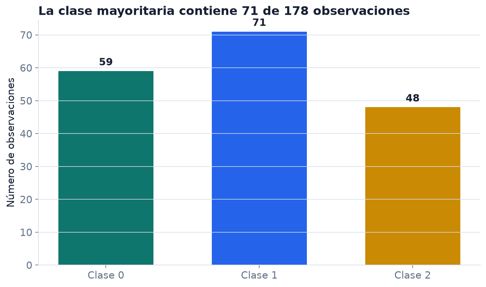
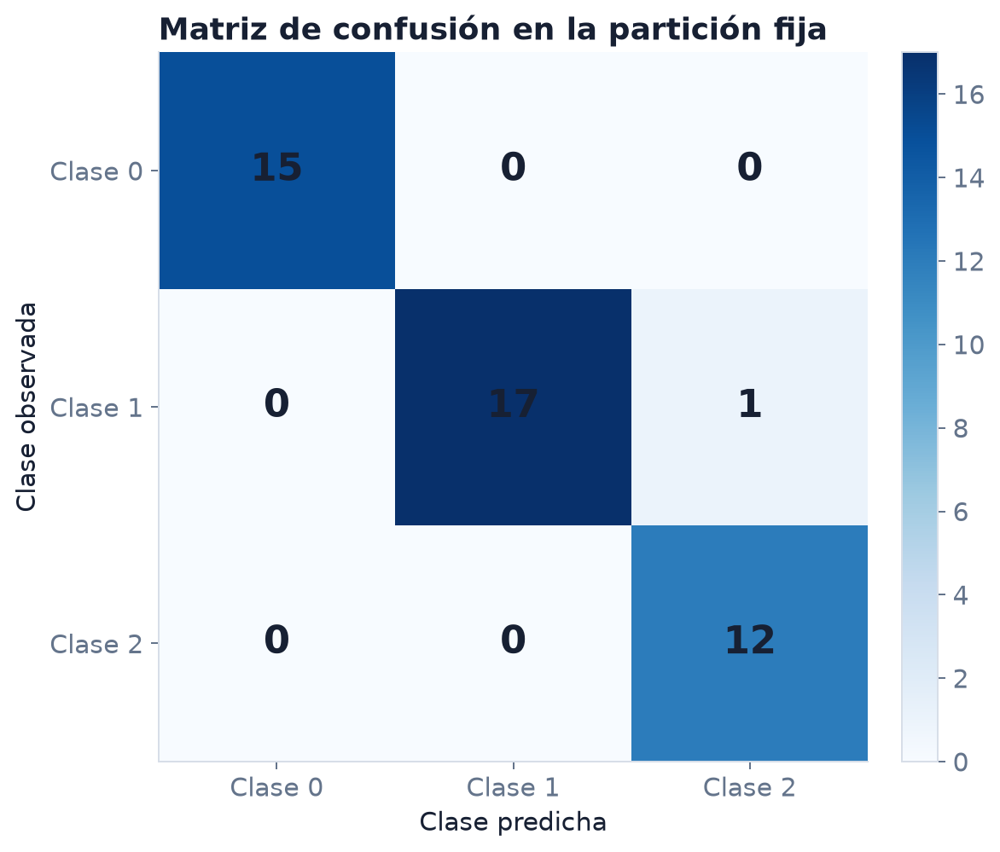

Primer experimento: baseline, partición y errores
¿Podemos clasificar vinos a partir de trece mediciones químicas mejor que una regla que siempre predice la clase más frecuente?
No estudiaremos todavía la derivación de regresión logística. Hoy la usamos como herramienta para aprender a leer un experimento.
Antes de ejecutar código debemos poder nombrar:
El algoritmo ocupa solo una parte de esta lista.
load_wineEl conjunto incluido en scikit-learn contiene resultados de análisis químicos de vinos de una misma región italiana, derivados de tres cultivares.
| Objeto | En este ejemplo |
|---|---|
| fila | un vino analizado |
| columnas | 13 mediciones químicas |
| objetivo | clase 0, 1 o 2 |
| tamaño | 178 observaciones |
La forma confirma cuántas filas y variables entrarán al procedimiento; no explica por sí sola qué significan.

Cálculo reproducible con load_wine de scikit-learn.
Si ignoramos las trece variables y siempre predecimos la clase más frecuente, ¿qué fracción del conjunto completo acertamos?
\[ \frac{71}{178}=0.399 \]
Esta cuenta anticipa el orden de magnitud del baseline, pero la evaluación se hará en test.
random_state=2105 hace reproducible la partición. No convierte una sola partición en una estimación universal.
stratify=y?| clase | total | train | test | proporción total | proporción test |
|---|---|---|---|---|---|
| 0 | 59 | 44 | 15 | 0.331 | 0.333 |
| 1 | 71 | 53 | 18 | 0.399 | 0.400 |
| 2 | 48 | 36 | 12 | 0.270 | 0.267 |
La estratificación conserva aproximadamente las proporciones de clase. No usa las variables químicas.
Sin ejecutar nada, respondan:
Tiempo: 5 minutos.
Aprende cuál clase es más frecuente en y_train. No consulta una sola columna de X.
X_train → aprender escalas → transformar X_train → ajustar regresión logística
Al predecir:
X_test → usar las escalas ya aprendidas → usar coeficientes ya ajustados → clase predicha
Test no determina medias, desviaciones ni coeficientes.
Las trece mediciones están en escalas distintas. En una optimización con penalización, esa diferencia afecta tanto la geometría del problema como la interpretación de las magnitudes de los coeficientes.
aprende, para cada columna de train, una media y una desviación. Luego aplica esas mismas cantidades a test.
\[ x\longmapsto \widehat p_0(x),\widehat p_1(x),\widehat p_2(x) \longmapsto \arg\max_k\widehat p_k(x) \]
En la Semana 6 derivaremos el caso binario: sigmoide, log-loss, gradiente y umbral. Hoy basta distinguir probabilidades estimadas y clase final.
Ejecutaremos semana01_live_coding.ipynb celda por celda hasta obtener la tabla de comparación.
Antes de avanzar, compruebe:
(X_train.shape, X_test.shape) == ((133, 13), (45, 13));El baseline predice clase 1 en las 45 filas.
La diferencia frente al baseline es 0.578 en esta partición.
La comparación permite afirmar:
Con este procedimiento y esta partición, las variables contienen información útil para separar las clases mejor que repetir la clase mayoritaria.
No permite afirmar todavía:
El modelo tendrá 97.8 % de accuracy en cualquier vino medido en cualquier laboratorio.

Filas: clase observada. Columnas: clase predicha. Partición con random_state=2105.
La entrada de fila 1, columna 2 vale 1:
Una observación cuya clase real era 1 fue predicha como clase 2.
Todas las demás observaciones quedaron en la diagonal. La matriz dice qué confundió el modelo; no explica por qué.
| clase | precision | recall | F1 | soporte |
|---|---|---|---|---|
| 0 | 1.000 | 1.000 | 1.000 | 15 |
| 1 | 1.000 | 0.944 | 0.971 | 18 |
| 2 | 0.923 | 1.000 | 0.960 | 12 |
El único error reduce el recall de la clase 1 y la precision de la clase 2.
Con clases muy desbalanceadas, una accuracy alta puede provenir de acertar casi siempre la clase dominante.
Por eso reportaremos, según el problema:
Resultado. El modelo acierta 44 de 45 observaciones de test, frente a 18 del baseline.
Error observado. Confunde una fila de clase 1 con clase 2.
Alcance. Conjunto limpio, tres clases y una partición fija.
Límite. No se evaluó cambio de laboratorio, región o periodo.
Cada oración responde a una salida concreta del notebook.
Antes de usar el clasificador fuera de este ejercicio habría que estudiar:
Un dataset didáctico no sustituye el contexto de operación.
Un experimento reproducible conserva:
| Elemento | Aquí |
|---|---|
| datos | versión incluida en scikit-learn |
| partición | random_state=2105, estratificada |
| transformación | StandardScaler ajustado en train |
| modelo | LogisticRegression(max_iter=2000) |
| métricas | accuracy, matriz y reporte por clase |
Entregue el notebook ejecutado de arriba abajo, con salidas visibles y respuestas propias.
Si el entorno falla, el reporte debe incluir:
Un pantallazo aislado rara vez permite reproducir el problema.
Para cada idea escriba seis líneas:
No es necesario haber elegido un algoritmo.
Compare estas dos frases:
“El modelo es casi perfecto.”
“En 45 observaciones reservadas acertó 44; falta estudiar otras particiones y datos de otra procedencia.”
En dos minutos, anote qué información agrega la segunda y qué pregunta sigue abierta.
Si una frase no puede rastrearse a una salida o a una limitación conocida, reescríbala.
Un primer experimento bien leído responde cuatro preguntas:
¿Qué se predijo?
¿Contra qué referencia?
¿Dónde falló?
¿Hasta dónde llega la conclusión?
La próxima semana construiremos un modelo lineal desde su matriz de diseño.